The library audit found that JLY command 0x3B carries signed vacuum/boost, cylinder head temperature, and intake air temperature.
The stock layouts never read these values. The menu-v7 data log records them; the truck log gives the units and scales.
Every shot passes the margin check (capture.js: 16 shots).
vacuumBoost with vacuumBoostDir, one signed reading for vacuum and boost. The band keeps the round 4 psi scale until the log gives the raw unit.Pick: A, locked (2026-10-30). The head temperature takes a fifth column in the temperature card, between coolant and oil. A is the default; ?cht=b keeps option B for reference.
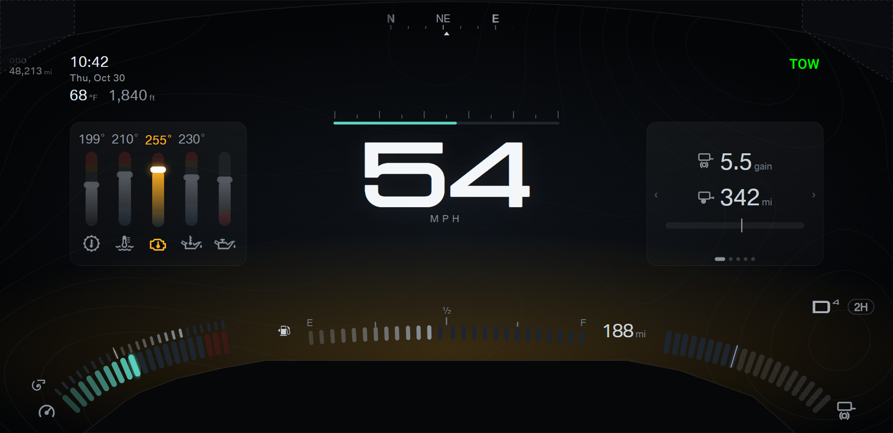
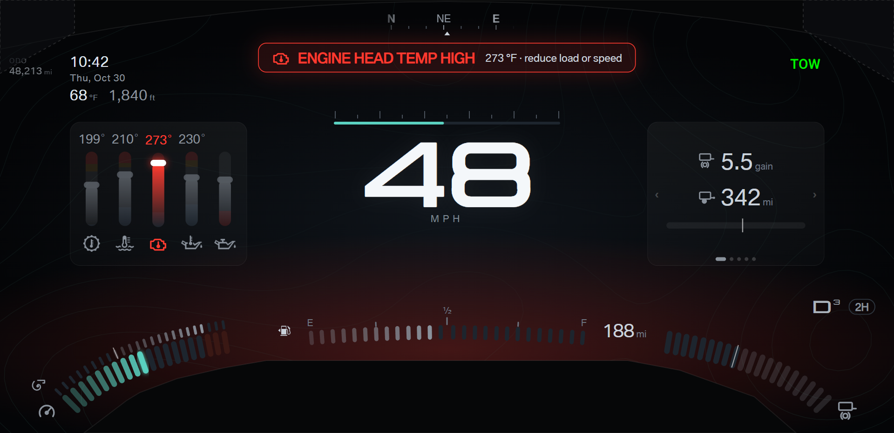
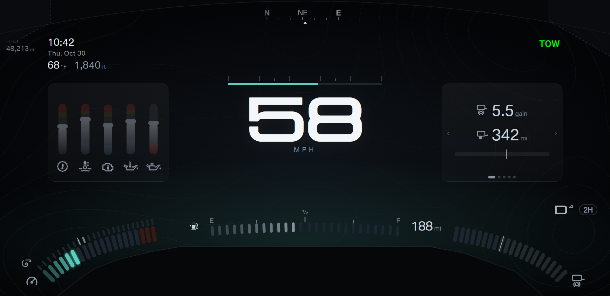
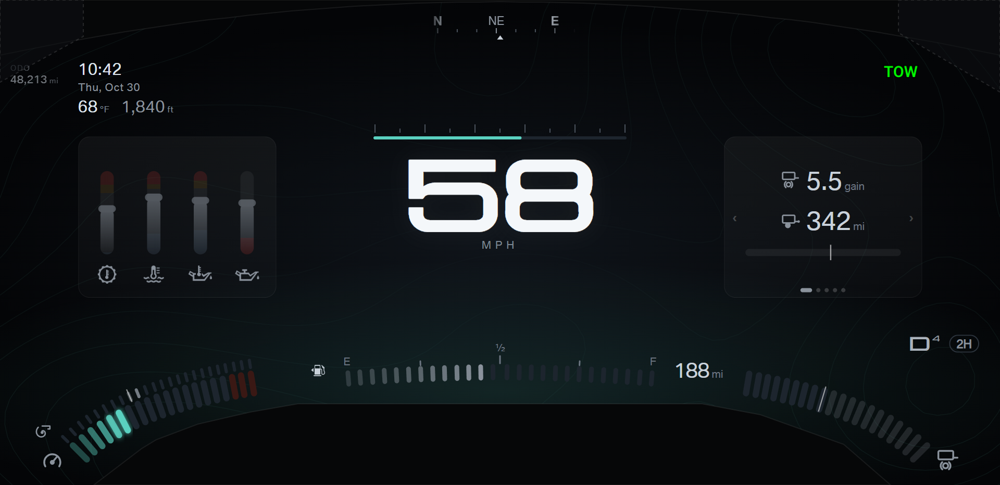
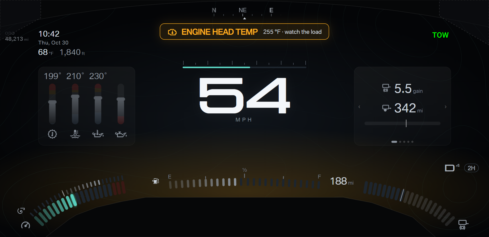
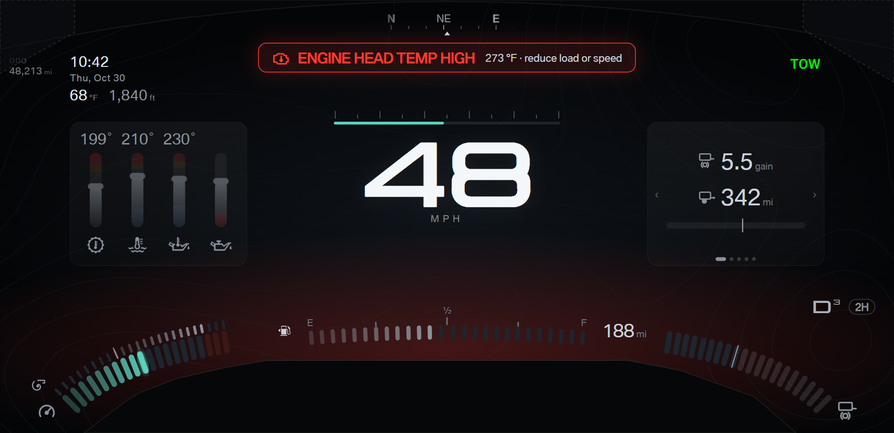
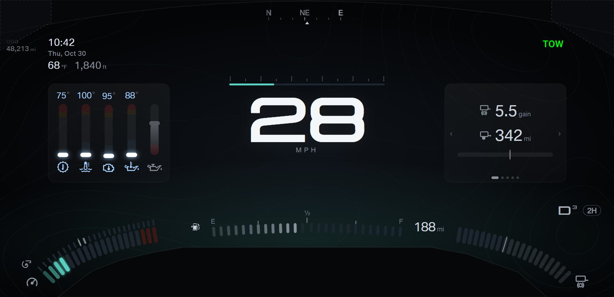
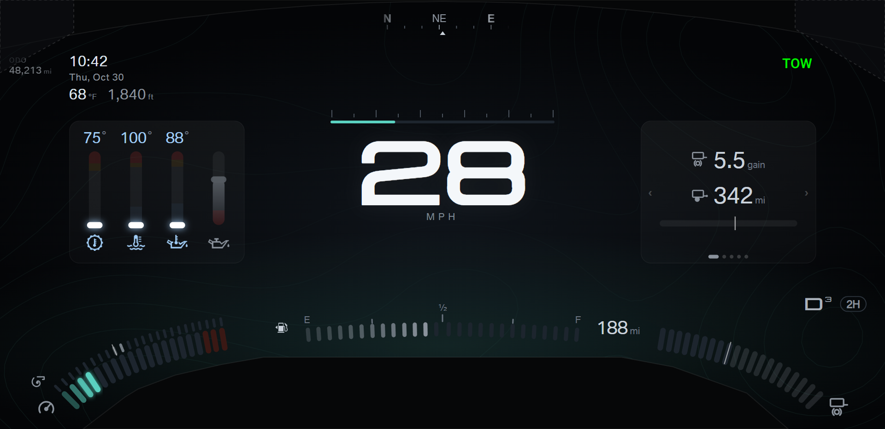
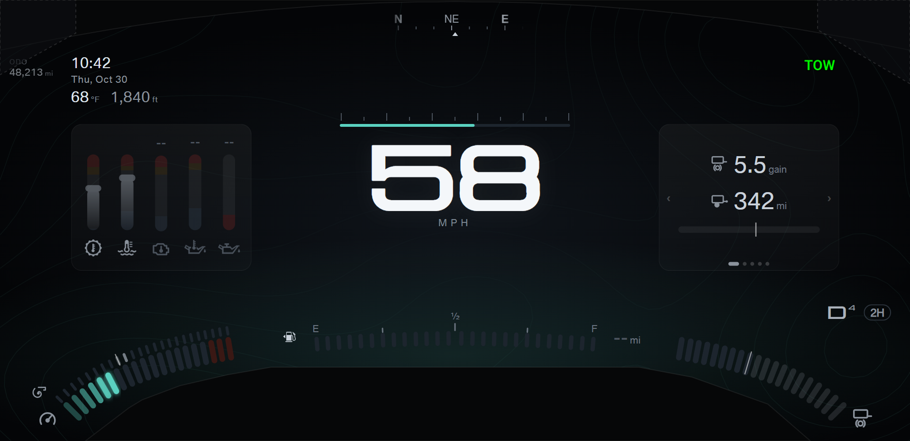
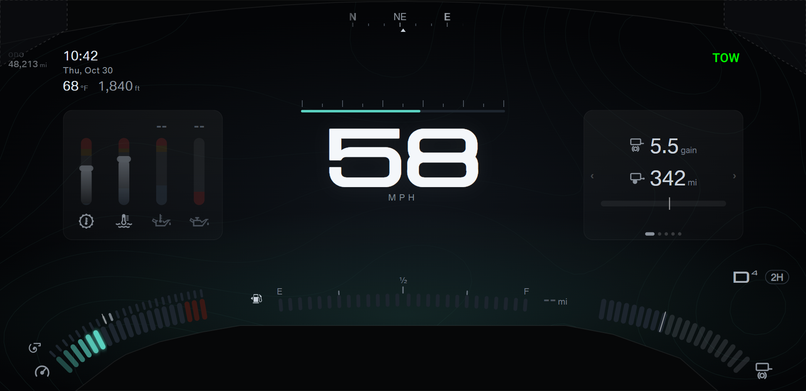
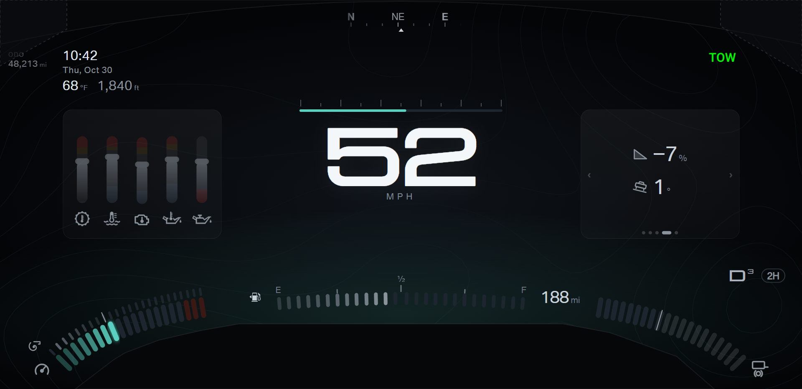
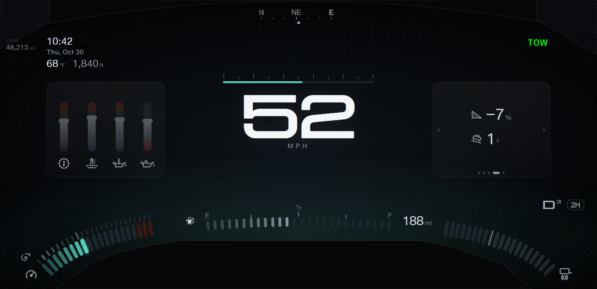
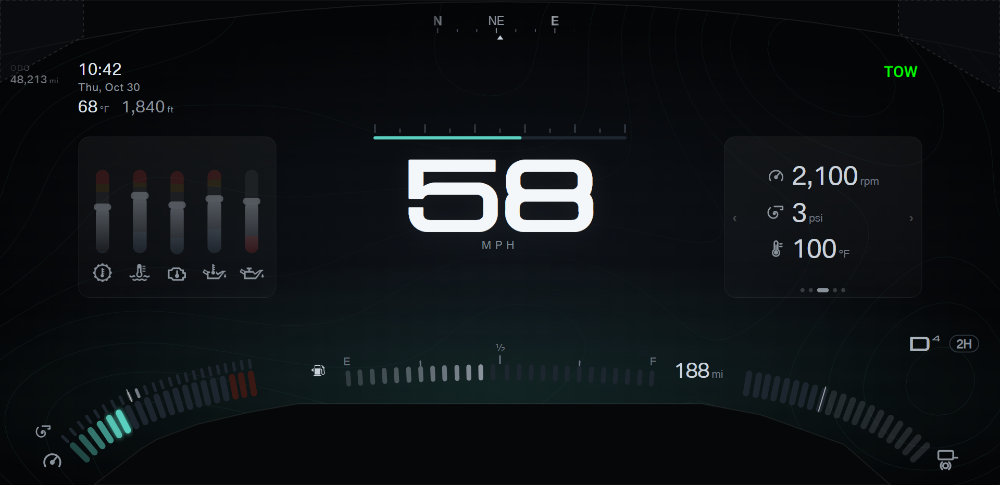
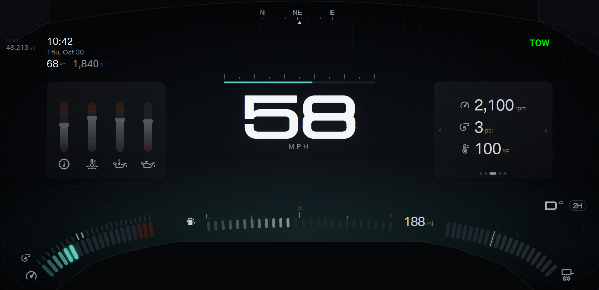
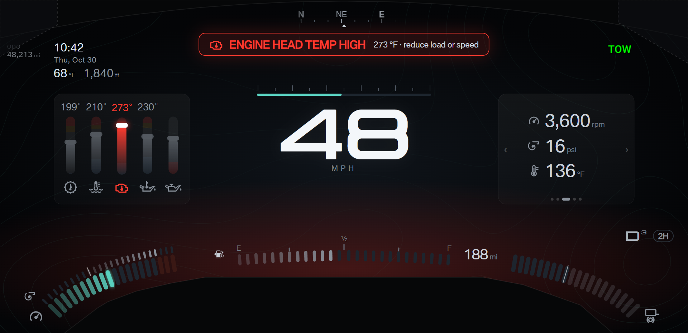
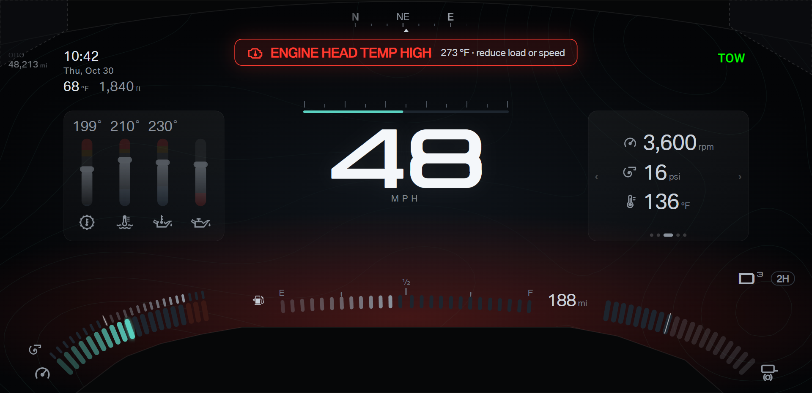